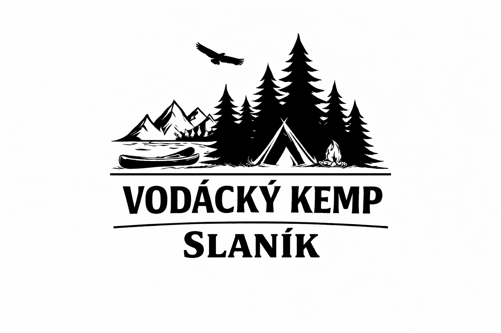
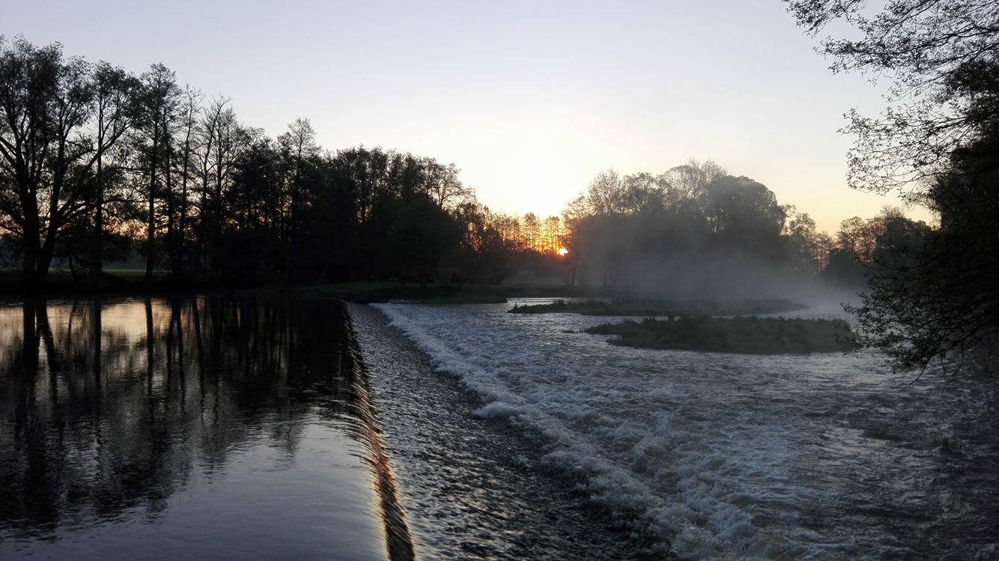
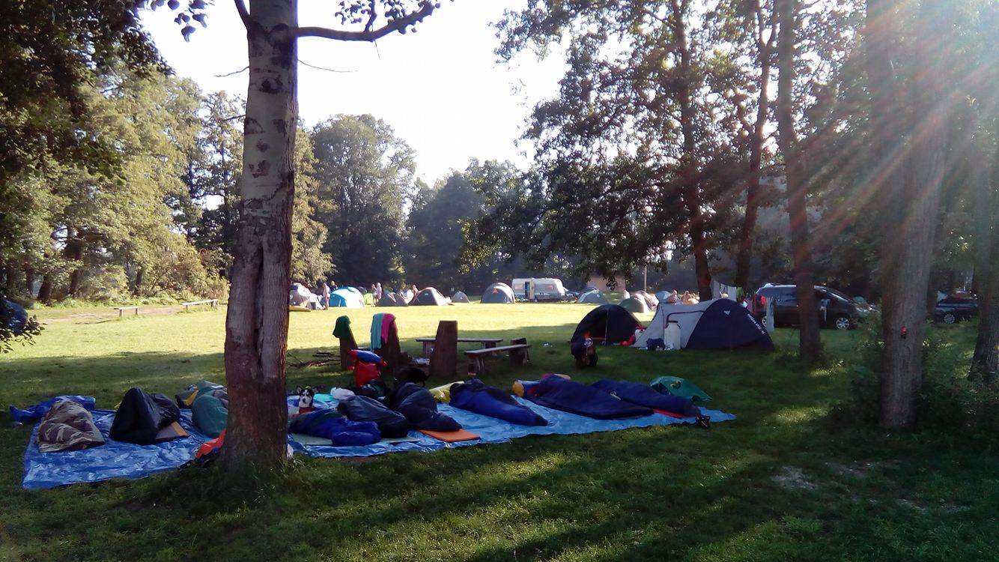
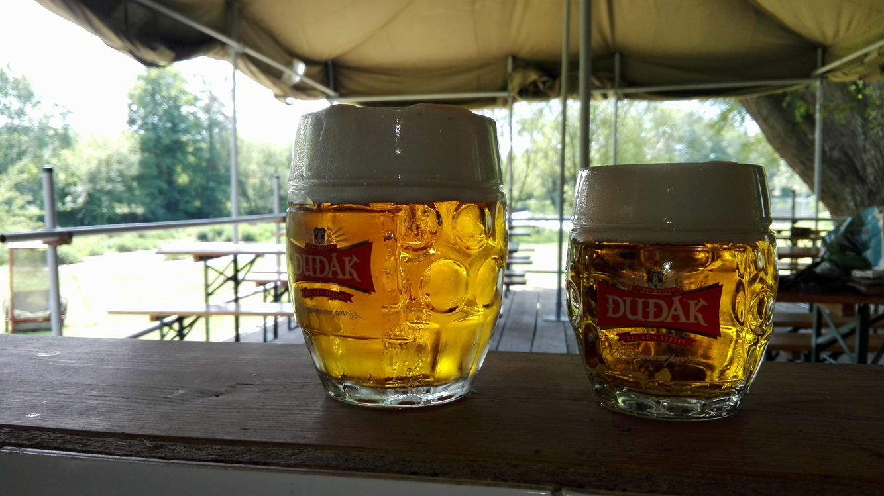
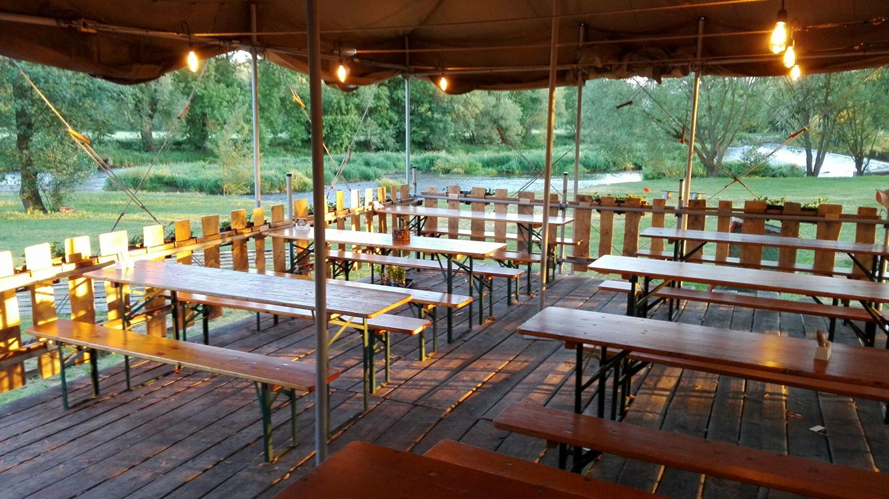

❮
❯

Naplánujte si dovolenou na vodě během pár vteřin – automaticky, přehledně a bez starostí.
Na ostrově mezi řekou Otavou, mlýnským náhonem a pískovnou najdete jediný kemp, který leží mimo ruch obce, přímo u jezu na břehu řeky Otavy. Vítejte ve vodáckém kempu na Slaníku.
Slaník není obyčejný kemp. Tohle je návrat do dětství, zážitky na vodě, večery u ohně s kytarou, spaní ve stanu a opékání buřtů pod hvězdami. Na vodě prožijete rodinnou dovolenou, kdy děti samy odloží telefony a budou si chtít hrát. V kempu Slaník i dospělý zapomene na shon všedních dní, nechá starosti doma a konečně si odpočine obklopen přírodou a svými nejbližšími.
Jmenuji se Martin Krejčí, mám dva syny a v jižních Čechách žiju celý život. Kemp na Slaníku jsem vybudoval od základu a postupně se stal mým dalším „dítětem“, do kterého jsem vložil čas, energii i srdce. Kemp provozujeme s partnerkou rodinným způsobem a stejný přístup máme i ke všem našim hostům. Těším se, že se u nás potkáme a přeneseme na sebe pozitivní energii, která vám vydrží až do další vodácké sezóny.




Kapacita kempu je omezená, aby si každý mohl užít dostatek prostoru a klidu.
Doporučujeme rezervovat pobyt s předstihem, zejména během letních měsíců.
Vyberte si termín a přijeďte zažít opravdové vodáctví do kempu Slaník.
📞 Zavolej Provozní kempu: +420 731 537 471 Rezervovat pobyt stravování, lodě, dopravu osob a bagážeNavržené vodácké trasy odpovídají zvolenému počtu nocí a jsou navrženy jako optimální program pobytu.
Jak se dostanete do kempu?
Návrh autodopravy je orientační a bude do 24 hodin telefonicky potvrzen operátorem.
Přibližně 2 dny před plánovanou dopravou vás budeme znovu kontaktovat pro finální potvrzení nebo úpravu detailů.
🚣 Vrácení lodí
Lodě se vrací v cíli plavby nejpozději do 16:00.
🚐 Návrat osob na Slaník
Pokud cílovým místem plavby není kemp Slaník,
je po vrácení lodí navržen odvoz osob zpět do kempu Slaník.
⏱️ Časy jsou orientační a musí být
před příjezdem telefonicky potvrzeny
s půjčovnou lodí i autodopravou.
Tyto údaje použijeme pouze k potvrzení rezervace.
Zkontrolujte prosím údaje níže. Po potvrzení vám rezervaci do 24 hodin telefonicky potvrdíme.